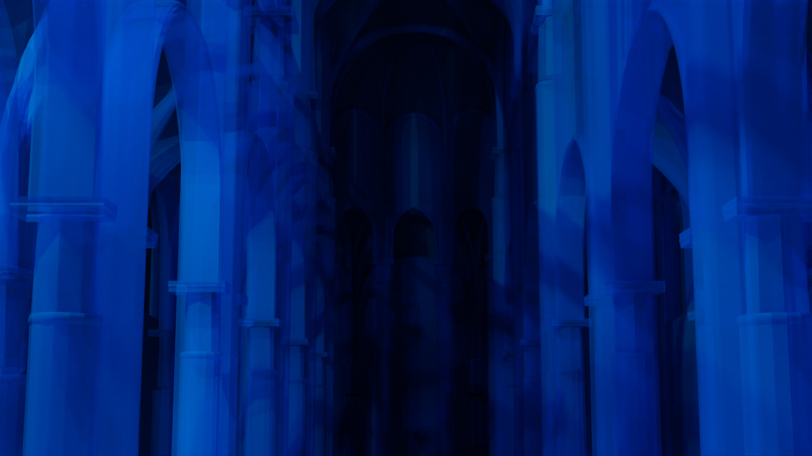
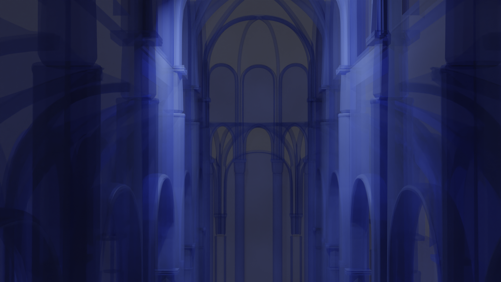
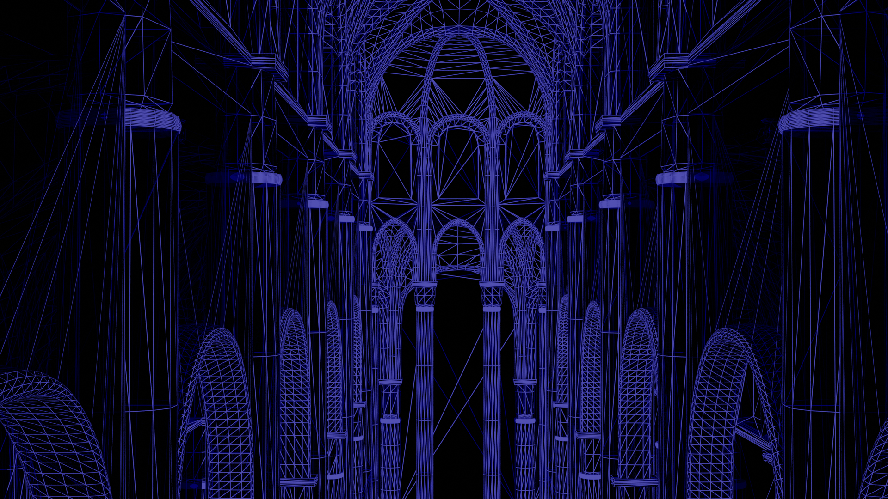
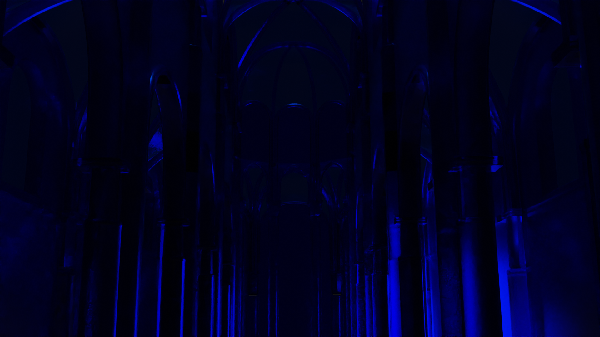
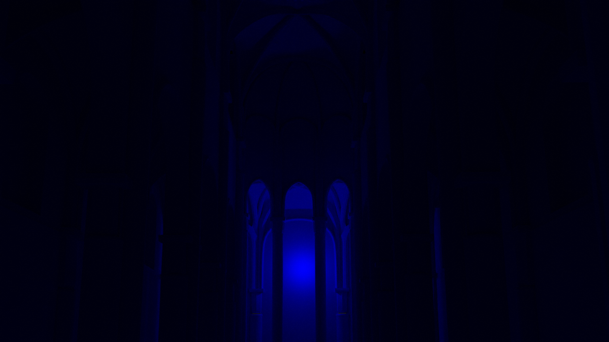

Fantômes d'églises
Modélisation, shader et animation sur Blender
Animations réalisées dans le cadre de mon projet de diplôme sur les œuvres fragmentées. Je me suis demandé comment le numérique pouvait nous permettre de créer des dispositifs capables de montrer les œuvres fragmentées sans nier leur histoire. Ces animations basées sur l’église abbatiale de Saint-Germain des Prés sont pensées pour être des projections monumentales afin de créer un espace immersif pour le spectateur. La musique qui les accompagne souligne l’atmosphère apaisante bien particulière des églises.





